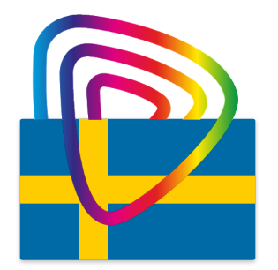

AI is er nog nauwelijks
Verboden voor leerlingen tot grade 9 en er is geen beleid. De Engelse schrijfles met AI-tips was de sterkste toepassing en een voorbeeld van goed pionieren.

Van 18 tot en met 21 november bezocht ik met collega's van Stichting Prisma scholen in Stockholm. Ik vertrok met twee leerdoelen. Als ICT-coördinator keek ik daarnaast naar hoe andere klassen met devices en AI werken.
Verboden voor leerlingen tot grade 9 en er is geen beleid. De Engelse schrijfles met AI-tips was de sterkste toepassing en een voorbeeld van goed pionieren.
De scholen gaan terug naar boeken en werkboeken. Digitaal zag ik vooral als verrijking: iPad-rekenactiviteiten en verhalen schrijven in een Minecraft-wereld.
Leerlingen werken in een gesloten omgeving en alleen aan taken die de leerkracht openzet. Dat voorkomt ongepast gebruik van onder andere AI. Ik beveel Prisma aan dit te onderzoeken.
De lessen zijn leerkrachtgestuurd. Wel zag ik sterke werkvormen voor begrip en samenwerking.
Het sociogram, het jaarlijks leerlinggesprek met de directeur, en een verrijkte kijk op inclusie (en hoe dit vorm te geven).
Met mogelijkheden tot nieuwe samenwerkingen na de reis.
Ongeveer 670 leerlingen en 90 stafleden. Per grade 70 tot 75 leerlingen in klassen van 20 tot 25, die regelmatig wisselen, ook in het jaar, zodat leerkrachten de hele grade leren kennen. Plaatsing gebeurt via een stedelijk algoritme op woonlocatie, ongeacht de behoefte van het kind.
Visie: een educatieve en veilige school waar leerlingen zich goed voelen, 'challenged but not stressed'. Tot en met grade 9 geldt hetzelfde curriculum, omdat de verschillen bij elkaar blijven en elkaar versterken. Nationale toetsen zijn er in grade 6 en 9.
Ongeveer 500 leerlingen. Ik bezocht een grade 3-klas met een leerkracht en een onderwijsassistent. In de klas hingen de drie harten zichtbaar en de rekenles verliep volgens het EDI-model. Ouders kunnen twee keer per jaar binnenlopen in de klas.
Operationeel schoolleider en leerkracht bij De Nederlandse School Stockholm, die één keer per week Nederlands taal- en cultuuronderwijs geeft op locaties van de Stockholm International School. Ze heeft vooral ervaring met onderwijs in Singapore en nu Zweden, en kent het Nederlandse onderwijs een beetje. We spraken haar in het hotel; ze was een waardevolle spiegel.
Over AI en digitaal bevestigde ze wat ik zag: geen AI-beleid, verboden voor leerlingen, en een tendens terug naar boeken en werkboeken.
Zweden kent tot en met grade 9 één doorlopende school (6 tot 16 jaar). Grade 5 en 6 komen qua leeftijd overeen met mijn groep 8.
Klik op een foto om hem groot te bekijken.
Onderzoeken hoe digitale geletterdheid en AI worden verweven in het onderwijs. Beoogde opbrengst: drie direct toepasbare voorbeelden voor reken- en zaakvaklessen en een beleidsvoorstel voor veilig en didactisch verantwoord werken met AI.
Er is geen AI-beleid en leerlingen worden er nog niet op voorbereid (Marjolein Pronk). Leerkrachten gebruiken AI wel voor voorbereiding, maar met eigen accounts: schoolaccounts zijn er nog niet.
Eén leerkracht op Katarina Norra pioniert met een goedgekeurde chatbot. In de Engelse les schrijven leerlingen een tekst, krijgen AI-tips en herschrijven die zelf. In een tweede voorbeeld schrijven leerlingen prompts, voert de leerkracht ze in en geeft de resultaten terug: AI met de leerkracht als tussenpersoon.
Leerlingen werken nauwelijks op devices en de leerkracht bepaalt wanneer ze die gebruiken. Er is een webfilter, met filters op games en geweld.
Leerlingen hebben een eigen device, vaak een iPad of Chromebook, en structureel één lesuur ICT per week, onder meer programmeren (Makerspace).
Op beide scholen werd hiermee gewerkt en dat vond ik heel positief. Leerlingen kunnen alleen werken aan de taken die de leerkracht openzet, voor toetsen en schrijfopdrachten. Zo kunnen ze niet het internet op en wordt ongepast gebruik van onder andere AI voorkomen.
Ik raad Prisma aan te onderzoeken of we dit ook kunnen inzetten bij toetsen en schrijfopdrachten.
Cursorisch aangeboden en vanaf de oudere leeftijdsgroepen geïntegreerd in de vakken. In de jongere groepen wordt digitaal zo min mogelijk gebruikt. Twee voorbeelden op Katarina Norra:
Onderzoeken hoe leerkrachten eigenaarschap en executieve functies ontwikkelen bij 11- en 12-jarigen. Beoogde opbrengst: een vernieuwde weektaak of projectplanning voor groep 8.
In grade 3 staan enkele extra werkplekken. De gangen dienen als rustige werkplek, maar ik had niet het idee dat er een visie achter zit.
In de bovenbouw (vanaf grade 6 of 7) werkt iedereen aan dezelfde les en opdracht. Naarmate de opdracht vordert, loopt de moeilijkheid op en zit er differentiatie in. Grade 9 werkt van les tot les, met per vak werk.
Geen enkele leerling sprak buiten zijn of haar beurt. Er was geen enkele correctie nodig. De leerkracht kan daardoor bijna 100% didactisch werken.
Grade 4 tot 6 leert studeren in de klas, grade 7 tot 9 buiten school als huiswerk. Verwerkingsopdrachten maken ze in de klas; wat niet af is, is huiswerk.
In de Engelse les leest de hele klas hetzelfde boek. Na elk hoofdstuk verzint de leerkracht opdrachten voor woordenschat, samenvatten en dieper nadenken over de tekst. Ook bij Zweeds. Veel aandacht voor klassikaal lezen.
Campus Manilla, volgens het EDI-model (expliciete directe instructie).
Geeft een-op-een leesbegeleiding in leesboeken, uitdagend tot hoever een leerling kan.
Leerlingen ruilen hun werkboekje met een schoudermaatje en checken onder andere de spelling.
De waardevolste inzichten kwamen van buiten mijn leerdoelen.
Leerkrachten van dezelfde grade vullen per leerling in hoe goed hun band is. Daarna bedenken ze zelf verbeteracties om hun relatie met bepaalde leerlingen te versterken.
Staat een leerling bij meerdere leerkrachten op rood, dan is dat een signaal om iets te doen.
Eén keer per jaar spreekt de directeur zes leerlingen per grade. Dat levert goede informatie op over de kwaliteit van het onderwijs en wat tekortschiet.
Mijn twijfels, om vier redenen
In Zweden staan gemiddeld meer volwassenen voor de klas, met meer geld. Bij ons loopt de inzet van onderwijsassistenten juist terug. Zonder die middelen is het niet te kopiëren.
Een indruk uit één klas, geen conclusie. Een leerling met een persoonlijke begeleider kreeg de instructie mee, maar was op veel momenten en in de pauzes buiten de groep. Is zo'n leerling dan echt onderdeel van de groep? Mijn gevoel zegt dat aansluiting bij gelijkgestemden in ons SBO passender is.
Marjolein Pronk vraagt zich zelf ook af of dit altijd passend is.
Het is voor mij geen inclusie als er geen aandacht is voor andere manieren van denken en leren, zoals bij hoogbegaafdheid. Inclusie is leerlingen zien en aanpassingen maken binnen de kaders van de klas, met eventueel een Topklas of SBO voor gelijkgestemden.
Buiten zijn kinderen relaxed en vrij. In de klas is het heel stil. De dag start op de gang: leerlingen maken een rij, steken hun duim op en gaan één voor één naar binnen, waar de leerkracht ze begroet. Ze staan achter hun stoel en gaan pas zitten als de leerkracht goedemorgen zegt. Daarna een korte dagopening met datum en programma.
Voor je iets zegt, vraag je jezelf af: is één antwoord nee, dan zeg je het niet.
Cijfers en rapporten beginnen pas laat. Ze hechten waarde aan kwaliteit, niet aan beoordelingen.
Bijna altijd naar buiten. In de kleine pauze vaste groepjes met een vaste speelplek, om relaties te versterken.
Op beide scholen hebben leerlingen een mooi handschrift.
Vergelijkbaar met onze maak- en maatwerkgroep, dus niet bijzonder.
Mijn doel was minimaal twee toepasbare quick wins. Het werden er vier, elk met een eerste stap en een manier om te zien dat het werkt.
Bron: de Engelse les op Katarina Norra
Bij een betoog of recensie uploaden leerlingen hun tekst, krijgen tips en herschrijven.
Een vaste feedbackprompt maken en testen met Copilot, binnen een door Prisma goedgekeurde omgeving en zonder persoonsgegevens. Bespreekpunt voor de stichtingsbrede werkgroep.
Eigen klas, taal.
Herschreven teksten zijn beter dan de eerste versie en leerlingen kunnen zeggen welke tip ze gebruikten. Werkdrukverlagend voor de leerkracht.
Bron: het jaarlijks leerlinggesprek van de directeur op Katarina Norra
Eén of twee keer per jaar zes leerlingen per groep spreken.
Bespreken met de kwaliteitscoördinator en directie. Eventueel eerst een proef met zes leerlingen uit mijn eigen groep.
School, via de kwaliteitscoördinator.
Het gesprek geeft de reden achter de SCOL-antwoorden en concrete verbeterpunten.
Bron: Katarina Norra, grade 4 of 5: heks, verrekijker en verdriet
Een verhaal typen op drie sleutelwoorden, waarna leerlingen elkaars verhalen lezen.
Wij hebben Minecraft Education. Zoeken welke wereld hiervoor passend is, het proberen en eventueel aanbieden in groep 5 of 6.
Groep 5 of 6, taal en ICT.
Leerlingen lezen en bespreken elkaars verhalen in de wereld.
Bron: Campus Manilla, de drie harten zichtbaar in de klas
Is het waar, is het vriendelijk, is het noodzakelijk? Is één antwoord nee, dan zeg je het niet.
De aspecten gebruiken, maar in een andere context die past bij onze school.
Eigen klas en school, sociale omgang.
Leerlingen gebruiken de vragen zelf onderling.
Een grote meerwaarde van deze reis was het ontmoeten van collega's.
Veel collega's kende ik van naam, maar ik heb ze nu beter leren kennen. Door in gesprek te gaan over verschillende onderwijsvisies weet ik veel meer van hoe het op andere scholen gaat. Omdat je drie dagen intensief met elkaar bezig bent, bouw je echt een band op.
Er was een balans tussen serieuze zaken, zoals de schoolbezoeken en onderwijskundige gesprekken, en ontspanning, zoals een drankje bij de Hard Rock Café en een excursie naar het Vasa-museum. Het was een totaalpakket.
Een collega wil voor groep 8 aansluiten bij de VO-week.
Met een andere collega ga ik meer uitwisselen op het gebied van hoogbegaafdheid.
Interessante gesprekken met Hay Frericks, een onderwijsman in hart en nieren. Hij kan wellicht een verbinding leggen met SPO Venray op het gebied van digitale geletterdheid.
Het Prisma-gevoel is zeker versterkt. Een groot woord van dank aan de organisatie: Nicole, Corneeltje, Gerty en Hay, voor het mogelijk maken van deze waardevolle studiereis.